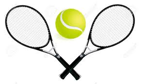
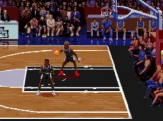
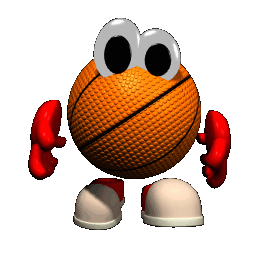

Atributos HTML
Se solicita organizar la página Web de modo que se visualice la siguiente información:
 El balón de fútbol utilizado en competiciones oficiales es regulado en sus medidas por la FIFA. Tiene forma de icosaedro truncado en un 99.9%, una circunferencia entre 68 y 70 centímetros y un peso entre 410 y 450 gramos. Los balones utilizados en competencias oficiales organizadas por parte de la FIFA,deberán contar con uno de los siguientes sellos: Internacional Match Standards, FIFA QUALITY ó FIFA QUALITY PRO;Dichos distintivos denotan que los balones han sido puestos a prueba en laboratorios autorizados por FIFA y han aprobado las distintas pruebas en las que se incluye: Peso, circunferencia, retención de aire,rebote y absorción de agua.
El balón de fútbol utilizado en competiciones oficiales es regulado en sus medidas por la FIFA. Tiene forma de icosaedro truncado en un 99.9%, una circunferencia entre 68 y 70 centímetros y un peso entre 410 y 450 gramos. Los balones utilizados en competencias oficiales organizadas por parte de la FIFA,deberán contar con uno de los siguientes sellos: Internacional Match Standards, FIFA QUALITY ó FIFA QUALITY PRO;Dichos distintivos denotan que los balones han sido puestos a prueba en laboratorios autorizados por FIFA y han aprobado las distintas pruebas en las que se incluye: Peso, circunferencia, retención de aire,rebote y absorción de agua.
 El calzado deportivo es un tipo de calzado que se utiliza para practicar deporte. Generalmente posee un cuerpo fabricado en piel, lona y/o materiales sintéticos y una suela de goma que favorece una mayor adherencia, así como más flexibilidad.
El calzado deportivo es un tipo de calzado que se utiliza para practicar deporte. Generalmente posee un cuerpo fabricado en piel, lona y/o materiales sintéticos y una suela de goma que favorece una mayor adherencia, así como más flexibilidad.
El tenis, también llamado tenis de campo, es un deporte de raqueta practicado sobre una pista rectangular (compuesta por distintas superficies las cuales pueden ser cemento, tierra, o césped), delimitada por líneas y dividida por una red.3Se disputa entre dos jugadores (individuales) o entre dos parejas (dobles). El objetivo del juego es lanzar una pelota golpeándola con la raqueta de modo que rebote en la otra cancha pasando la red dentro de los límites permitidos del campo del rival, procurando que este no pueda devolverla para conseguir un segundo rebote en el suelo y por ende un punto.
Si la imagen tiene extensión 'gif', su apariencia es la de un objeto animado. La sintaxis de la instrucción es similar a la de la visualización de una imagen:
 El baloncesto, basquetbol o básquetbol (del inglés basketball; de basket, 'canasta', y ball, 'pelota') o simplemente básquet,1 es un deporte de equipo, jugado entre dos conjuntos de cinco jugadores cada uno durante cuatro períodos o cuartos de diez2 o doce minutos cada uno. El objetivo del equipo es anotar puntos introduciendo un balón por la canasta, un aro a 3,05 metros sobre la superficie de la pista de juego del que cuelga una red. La puntuación por cada canasta o cesta es de dos o tres puntos, dependiendo de la posición desde la que se efectúa el tiro a canasta, o de uno, si se trata de un tiro libre por una falta de un jugador contrario. El equipo ganador es el que obtiene el mayor número de puntos.
El baloncesto, basquetbol o básquetbol (del inglés basketball; de basket, 'canasta', y ball, 'pelota') o simplemente básquet,1 es un deporte de equipo, jugado entre dos conjuntos de cinco jugadores cada uno durante cuatro períodos o cuartos de diez2 o doce minutos cada uno. El objetivo del equipo es anotar puntos introduciendo un balón por la canasta, un aro a 3,05 metros sobre la superficie de la pista de juego del que cuelga una red. La puntuación por cada canasta o cesta es de dos o tres puntos, dependiendo de la posición desde la que se efectúa el tiro a canasta, o de uno, si se trata de un tiro libre por una falta de un jugador contrario. El equipo ganador es el que obtiene el mayor número de puntos.
El contacto con la pelota se realiza con las manos. Los jugadores, también llamados baloncestistas, no pueden trasladarse sujetando la pelota, sino botándola contra el suelo. El equipo en posesión del balón o atacante, intenta anotar puntos mediante tiros, entradas a canasta o mates, mientras que el equipo defensor busca impedirlo robando la pelota o efectuando tapones. Cuando un tiro hacia la canasta fracasa, los jugadores de ambos equipos intentan atrapar el rebote.
NBA (NATIONAL BASKETBALL ASSOCIATION)
La National Basketball Association, más conocida simplemente por sus siglas NBA (en español, Asociación Nacional de Baloncesto), es una liga privada de baloncesto profesional que se disputa en Estados Unidos desde 1946, añadiéndose posteriormente Canadá en los años 1990. Al ser una entidad privada, no depende oficialmente de la Federación Estadounidense de Baloncesto. Los jugadores de la NBA están autorizados a competir internacionalmente tras un acuerdo especial a tres bandas firmado entre la Federación Internacional de Baloncesto (FIBA) —máximo organismo a nivel mundial—, la propia NBA y la Federación Estadounidense en 1989.
En caso de querer visitar la página oficial de esta asociación, te dejaré el link aquí: Página Oficial NBA
MEJORES JUGADORES:

Giannis Antetokounmpo:
Stephen Curry:
James Harden:
No Olvides practicar DEPORTES!!!